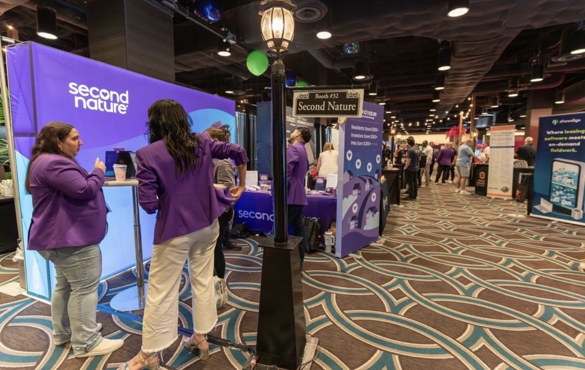
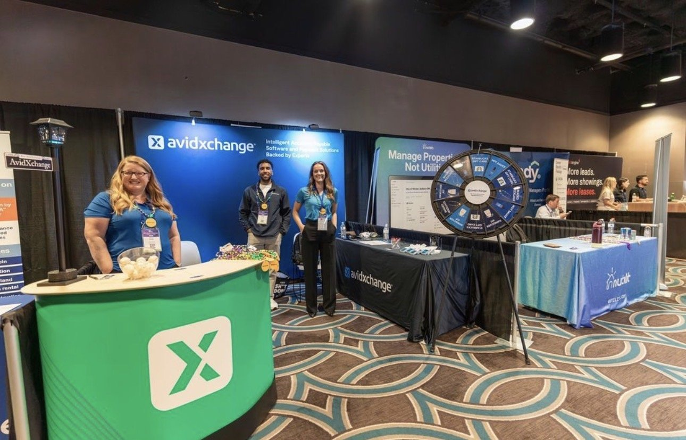

One of the keynote speakers said it best: walk the expo with a gameplan, or get swept up. That stuck with me, because it’s true for the expo and it’s true for tech decisions generally. Going in with a clear sense of what problem you’re actually trying to solve is the difference between a productive afternoon and a tote bag full of pamphlets.
The AI Question
I’ll be honest, I’ve been more bullish on AI in property management lately than I was a year ago.
I’ve been experimenting with it heavily in my own business and through Crane, and some of what I’m seeing is genuinely promising. A recent example: we built a policy and regulation tracker inside Crane that uses AI to surface the legislative changes actually relevant to PM operators across different markets. The kind of thing that would’ve taken a dedicated staffer to maintain a few years ago. Now it runs in the background and gets more useful every week.
So when I say there was a lot of AI on the floor, I don’t mean that dismissively. AI is no longer just a promise for the future in this industry. It’s being woven into screening, maintenance dispatching, owner reporting, and leasing communications right now. Some of it is genuinely useful. Some of it is rebranded if-then logic with a chatbot bolted on.
The trick is knowing the difference. And the only way to know is to ask hard questions about what the tool actually does, what it costs, and what implementation really looks like, not what the booth signage says.
The Vendors That Stood Out

DoorLoop and Rentvine both drew steady traffic as modern alternatives to legacy systems. Rentvine in particular generated buzz around its trust accounting architecture and the flexibility it offers PMs who’ve outgrown older platforms - and if you’ve ever tried to grow past a few hundred doors on a platform that wasn’t built for serious trust accounting, you know exactly why that matters.

LeadSimple made a strong case for systematizing the sales and follow-up process, something most PM companies still handle inconsistently, with sticky notes and good intentions. If you want to grow doors without growing headcount, this is the bottleneck most operators don’t realize they have.
And Property Management University was a useful reminder that your tech stack is only as good as the people using it. The fanciest software in the world doesn’t matter if your team isn’t trained to use it.
The Real Takeaway
The vendors who earned the most genuine interest weren’t the flashiest. They were the ones who could speak plainly about the problem they solved and answer hard questions about pricing, support, and implementation. In a room full of bold claims, clarity turned out to be its own competitive advantage.
That’s the lesson I’d take home from any expo, any conference, any sales call. Plain English beats jargon. Specific beats general. A vendor who tells you straight up what they can’t do is almost always more trustworthy than the one who claims to do everything.
We’re at a real inflection point in this industry. The tools are getting better fast, and the gap between operators who learn to use them well and operators who don’t is going to widen. Worth being intentional about which side of that gap you end up on.
—Peter